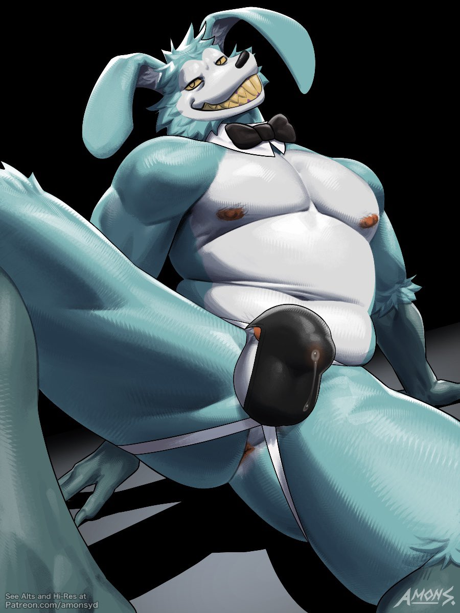
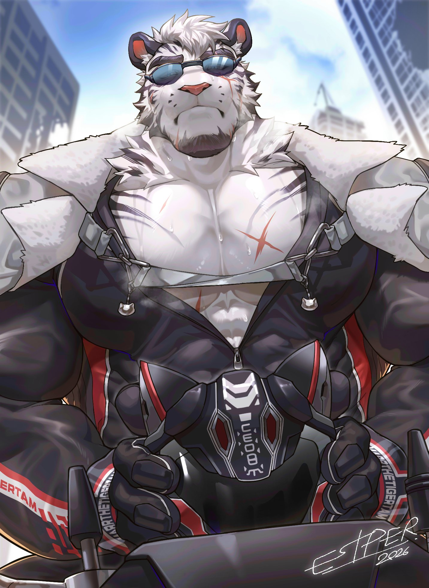
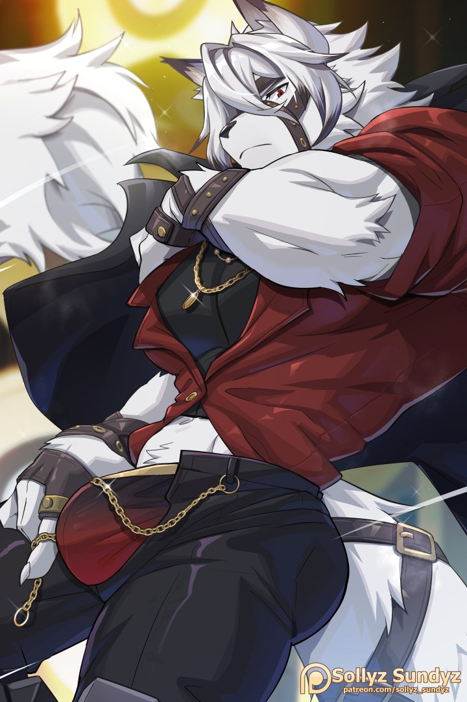

Amon Syd (también conocido como Amon) es un destacado artista e ilustrador dentro de la comunidad furry.Activo desde 2018, es reconocido principalmente por las siguientes características:Estilo artístico: Su trabajo destaca por una mezcla de fuerza, anatomía musculosa (arte estilo Bara) y elementos de terror y monstruos.


Estper (también conocido como Estper Art o EstperGallery) es un popular artista e ilustrador dentro del furry fandom, reconocido principalmente por sus ilustraciones estilo anime y bara (arte enfocado en personajes masculinos fornidos y musculosos).Sus obras frecuentemente presentan personajes antropomórficos y criaturas con anatomía altamente detallada.




ZCIK (también conocido como @zcik.art o @zcikart) es un popular ilustrador y animador del furry fandom originario de Colombia, conocido principalmente por crear contenido de temática antropomórfica, el cual incluye arte e ilustraciones para adultos.El artista centra su trabajo en la comunidad furry, produciendo animaciones detalladas y personajes en un estilo muy marcado.


Zourik (también conocido como Zourik Art o Zourik Kriz) es un popular ilustrador, historietista y animador dentro del furry fandom.Es reconocido por crear historias y cómics protagonizados por animales antropomórficos (conocido como arte furro), así como por ser fursuiter (fanático que usa disfraces de personajes animales).


Razzper (también conocido como Razzpery en redes sociales) es un popular ilustrador y dibujante de cómics dentro de la comunidad furry, conocido por su estilo artístico detallado y expresivo


Sollyz Sundyz es un reconocido artista digital dentro de la comunidad furry y del estilo kemono (animales antropomórficos de estética japonesa).Es ampliamente conocido por:Estilo de arte: Su trabajo se caracteriza por tener colores vibrantes y un diseño de personajes muy tierno y expresivo.Contenido: Crea ilustraciones y animaciones que abarcan desde contenido general hasta arte explícito para adultos.




Ken Wiggle Wizard (también conocido como Ken o @kenwigglewizard) es un artista digital e ilustrador enfocado en la subcultura furry (antropomórfica). Su trabajo incluye arte, cómics y animaciones de contenido para adultos (18+) y fetiches como látex, patas (paws) y BDSM.